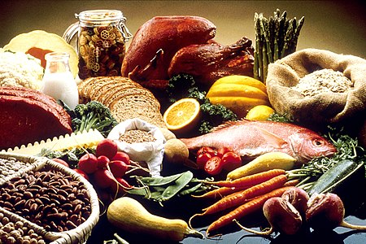

Food
Food
Food is any substance consumed by an organism for nutritional support. Food is usually of plant, animal, or fungal origin and contains essential nutrients such as carbohydrates, fats, proteins, vitamins, or minerals. The substance is ingested by an organism and assimilated by the organism's cells to provide energy, maintain life, or stimulate growth. Different species of animals have different feeding behaviours that satisfy the needs of their metabolisms and have evolved to fill a specific ecological niche within specific geographical contexts.
Omnivorous humans are highly adaptable and have adapted to obtain food in many different ecosystems. Humans generally use cooking to prepare food for consumption. The majority of the food energy required is supplied by the industrial food industry, which produces food through intensive agriculture and distributes it through complex food processing and food distribution systems. This system of conventional agriculture relies heavily on fossil fuels, which means that the food and agricultural systems are one of the major contributors to climate change, accounting for as much as 37% of total greenhouse gas emissions. [1]
List
1-Order List
- Move image by 2px
-
Learn to code
- HTML
- CSS
-
JavaScript
-
React JS
- State
- Component
-
React JS
2-Unorder List
-
it's raining
-
Cats
- Siamese
- Burmese
- Persian
-
Dogs
- Beagles
- Poodles
- Terriers
- jack russel
- Yorkshire
-
Cats

Food 1
.jpg)
.jpg)
.jpg)
.jpg)